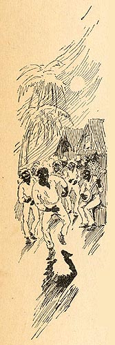

|
 This image can be read in a number of ways. It too resembles scenes contemporary readers would have been familiar with from Minstrel and Tom Shows, which typically depicted slaves "singin' and dancin'" on "de old plantation." But in the margins of MT's text it can be seen as a bitterly ironic comment on the unreality of such scenes. Tom has sold his mother to an "Arkansas cotton planter" -- in other words, down the river. But he pretends he's sold her to an "upcountry farm," and in Roxy's presence, we're told, the conversation "was all about . . . how pleasant a place it was, and how happy the slaves were there." That's specifically what this picture illustrates: the lie about how happy the slaves were on this mythical plantation. The Barrett Collection, UVA PS 1317 .A1 1894 |